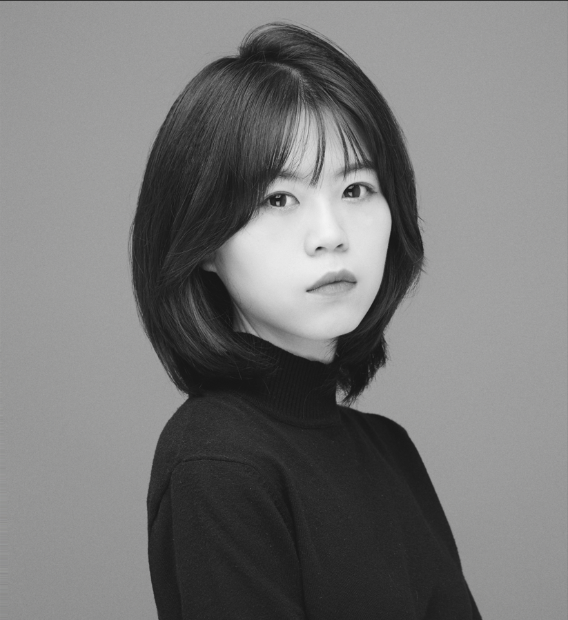

Huanhuan Duan (Long Dong) is an installation artist whose practice explores the intricate landscapes of human experience and emotional repair. Rooted in a multidisciplinary background, her work seeks to find spiritual outlets and existential order by integrating rational spatial construction with visceral emotional narratives.
Duan’s career began in Business Administration, but it was through the design of her own residence and commercial projects that her profound sensitivity to space was awakened. This led to five years of professional practice in interior design, where she cultivated a rigorous understanding of material properties, the narrativity of light, and the nuances of spatial scale. Her subsequent postgraduate studies at the Royal College of Art (RCA) served as a pivotal expansion of her artistic vision, shifting her focus from functional design to using space as a profound medium for emotional and philosophical inquiry.
For Duan, every creative act is a process of "fracturing and reconstructing the self." By dismantling the boundaries of her own experience and internal scars, she reconstructs spiritual order within her artistic forms. This intense creative methodology is essentially a path toward self-healing. Through her installations, she seeks to provide the public with a sanctuary for the soul within rational frameworks, facilitating a process of mutual healing for both herself and others, while offering emotional support and resilience to society.
Her current body of work focuses on capturing the shifting spiritual landscape, utilizing spatial narratives to respond to the profound need for connection and inner reconstruction in contemporary society. She believes that when art emerges from the process of personal fracturing, it acquires the transformative power to heal and reshape the bonds between individuals.